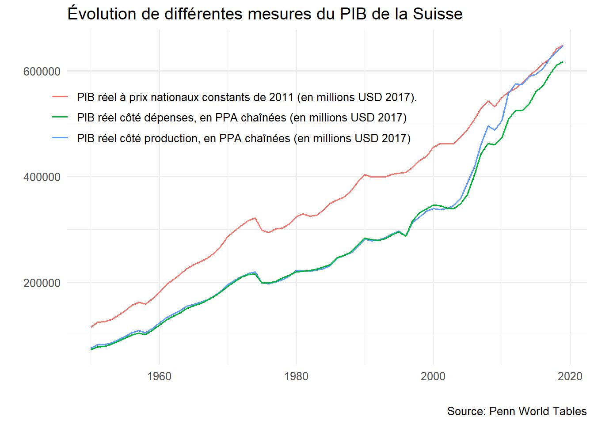
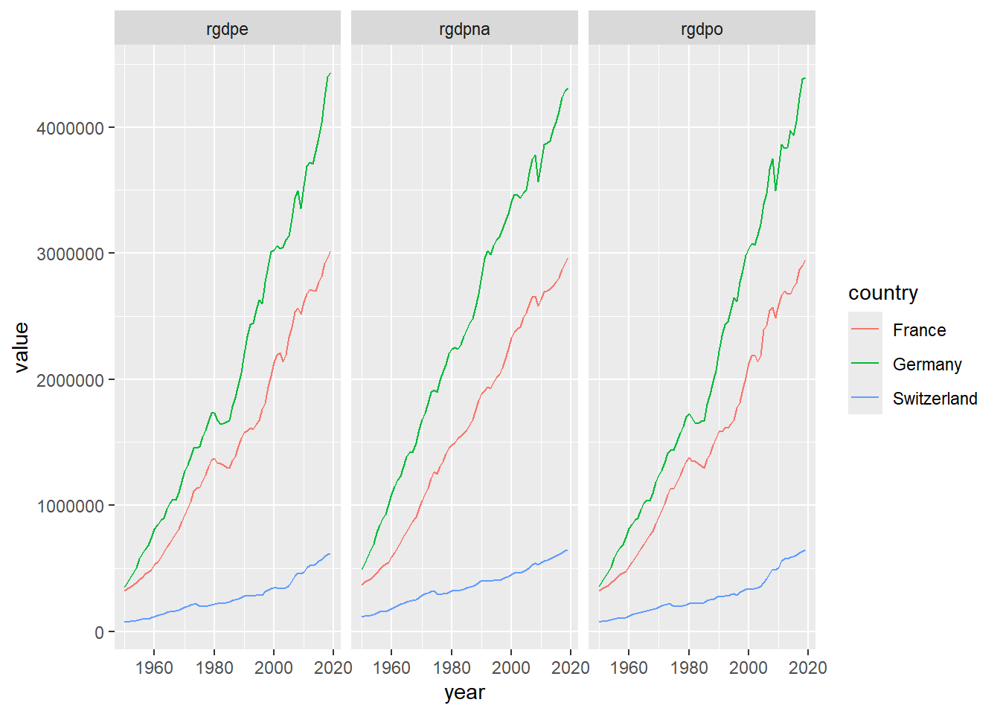
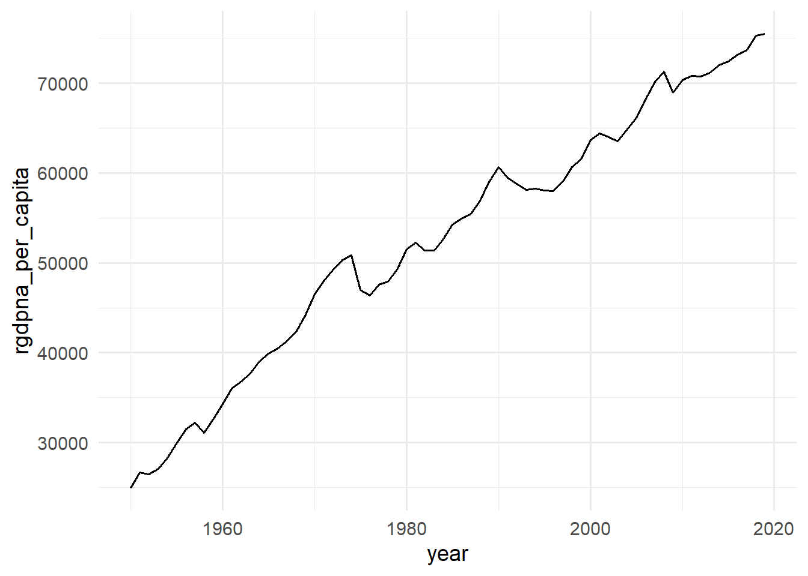

library(tidyverse)
library(gt)
library(Rdatasets)
pwt = Rdatasets::rddata("pwt_sample")Atelier PWT
Importation des données
On importe les données en utilisant la fonction rddata du package Rdatasets dévelopé par Vincent Arel-Bundock (dont je vous recommande d’ailleurs de jeter un oeil à ses travaux). Rdatasets contient de nombreux jeux de données (voir https://vincentarelbundock.github.io/Rdatasets/articles/data.html). Il existe deux manière d’importer des données dans R: soit importer un fichier de données (en format csv, excel, sav, texte, stata ou autre), soit d’utiliser des package comme Rdataset et importer les données directement dans R avec une fonction comme rddata. Pour comprendre comment importer des données de cette manière, il faut toujours se référer à la documentation du package utilisé.
Quelle fonction permettrait d’avoir un aperçu rapide des variables ?
glimpse(pwt)Rows: 1,540
Columns: 13
$ rownames <int> 1, 2, 3, 4, 5, 6, 7, 8, 9, 10, 11, 12, 13, 14, 15, 16, 17, 18…
$ country <chr> "Australia", "Australia", "Australia", "Australia", "Australi…
$ isocode <chr> "AUS", "AUS", "AUS", "AUS", "AUS", "AUS", "AUS", "AUS", "AUS"…
$ year <int> 1950, 1951, 1952, 1953, 1954, 1955, 1956, 1957, 1958, 1959, 1…
$ pop <dbl> 8.354106, 8.599923, 8.782430, 8.950892, 9.159148, 9.374454, 9…
$ hc <dbl> 2.667302, 2.674344, 2.681403, 2.688482, 2.695580, 2.702696, 2…
$ rgdpna <dbl> 127461.2, 130703.1, 125353.1, 138952.2, 150060.7, 155979.7, 1…
$ rgdpo <dbl> 114135.0, 110543.1, 108883.4, 122688.5, 131836.4, 138380.6, 1…
$ rgdpe <dbl> 121994.0, 113929.4, 111219.9, 123328.9, 131472.1, 136247.3, 1…
$ labsh <dbl> 0.6804925, 0.6804925, 0.6804925, 0.6804925, 0.6804925, 0.6804…
$ avh <dbl> 2170.923, 2150.847, 2130.956, 2111.249, 2091.725, 2072.381, 2…
$ emp <dbl> 3.429873, 3.523916, 3.591675, 3.653409, 3.731083, 3.811291, 3…
$ rnna <dbl> 639991.2, 690113.6, 704562.4, 733107.3, 771454.2, 810403.7, 8…La fonction glimpse nous renseigne sur les dimensions du jeux de données, à savoir le nombre de lignes (d’observations) et de colonnes (variables). Chaque ligne avec le signe $ sont le nom des variables du jeux de données. Le plus important est de vérifier si chaque variable est bien dans le type qui lui correspond, à savoir <chr> si la variable est catégorielle (comme country), <int> ou <dbl> si la variable est numérique (int pour integer et dbl pour double-digit qui est un format numérique).
En utilisant ggplot et tidyverse, comment je peux faire un graphique simple de toutes les variables du PIB disponible dans le dataset pour la Suisse ?
ggplot est l’un des meilleurs outils pour la visualisation de données. Il est fondé les principes de la grammaire des graphique (voir https://larmarange.github.io/guide-R/analyses/ggplot2.html) qui est axé sur les éléments suivant à spécifier dans chaque graphique ggplot:
- les données, à spécier avec
ggplot
Note: pwt %>% ggplot() revient à faire ggplot(data = pwt)
aes()qui spécifie les “aesthestics”, c-à-d les éléments qui seront dessinés sur le graphiques, cela inclut:- les variables
xetyainsi que différentes mises en forme que peuvent prendre ces variables commecolor,size,shape,fill - le type de graphique à faire,
geom_line()pour graphique en ligne,geom_point()pour les graphiques en point,geom_col()ougeom_bar()pour des barplots etc. - Éventuellement d’autres option pour améliorer l’aspect visuel du graphique
- les variables
options(scipen = 999) # option pour ne pas montrer les nombres en format scientifique
pwt %>%
filter(country %in% c("Switzerland")) %>%
ggplot(aes(x = year, y = rgdpna, color = "PIB réel à prix nationaux constants de 2011 (en millions USD 2017)."))+
geom_line()+
geom_line(aes(x = year, y = rgdpo, color = "PIB réel côté production, en PPA chaînées (en millions USD 2017)"))+
geom_line(aes(x = year, y = rgdpe, color = "PIB réel côté dépenses, en PPA chaînées (en millions USD 2017)"))+
theme_minimal(base_size = 12)+
labs(title = "Évolution de différentes mesures du PIB de la Suisse",
x = "", y = "",
caption = "Source: Penn World Tables")+
theme(
legend.title = element_blank(),
legend.position = c(0.32, 0.74)
)+
guides(colour = guide_legend(nrow = 3))
Comment peut-on inclure davantage de pays dans ce graphique ?
pwt %>%
filter(country %in% c("Switzerland", "France", "Germany")) %>%
ggplot(aes(x = year, y = rgdpna, color = "rgdpna"))+
geom_line()+
geom_line(aes(x = year, y = rgdpo, color = "rgdpo"))+
geom_line(aes(x = year, y = rgdpe, color = "rgdpe"))+
theme_minimal()+
labs(title = "Évolution de différentes mesures du PIB de la Suisse",
x = "", y = "",
caption = "Source: Penn World Tables")+
theme(
legend.title = element_blank()
)+
facet_wrap(~country)
On pourrait aussi avoir des graphiques séparés selon le type de mesure du PIB, mais pour cela il faut transformer le jeux de données du format large au format long avec pivot_longer() avant de le passer dans la fonction ggplot
pwt %>%
pivot_longer(cols = 5:13,
names_to = "indicateur",
values_to = "value")# A tibble: 13,860 × 6
rownames country isocode year indicateur value
<int> <chr> <chr> <int> <chr> <dbl>
1 1 Australia AUS 1950 pop 8.35
2 1 Australia AUS 1950 hc 2.67
3 1 Australia AUS 1950 rgdpna 127461.
4 1 Australia AUS 1950 rgdpo 114135.
5 1 Australia AUS 1950 rgdpe 121994.
6 1 Australia AUS 1950 labsh 0.680
7 1 Australia AUS 1950 avh 2171.
8 1 Australia AUS 1950 emp 3.43
9 1 Australia AUS 1950 rnna 639991.
10 2 Australia AUS 1951 pop 8.60
# ℹ 13,850 more rowspwt %>%
pivot_longer(cols = 5:13,
names_to = "indicateur",
values_to = "value") %>%
filter(country %in% c("Switzerland", "France", "Germany") & indicateur %in% c("rgdpna", "rgdpo", "rgdpe")) %>%
ggplot(aes(x = year, y = value, color = country))+
geom_line()+
facet_wrap(~indicateur)
Comment peut-on créer une nouvelle variable dans ce dataset ?
Il faut utiliser la fonction mutate. Par exemple, on peut calculer le pib réel par habitant en divisant l’une des variables du PIB réel disponible dans le jeux de données pwt (rgdpna, rgdpo ou rgdpe) par pop, la population en millions
pwt2 <-
pwt %>%
mutate(
rgdpna_per_capita = rgdpna/pop
)Voici ce que cela donne:
pwt2 %>%
filter(country %in% c("Switzerland")) %>%
ggplot(aes(x = year, y = rgdpna_per_capita))+
geom_line()+
theme_minimal(base_size = 14)
La Penn World Table contient aussi d’autres variables permettant de calculer d’autres mesures macroéconomiques d’intérêt on peut calculer deux différentes mesures de la productivité du travail en divisant le PIB par les heures travaillées (avh) ou le nombre de personnes engagées (emp). On peut aussi calculer un proxy du taux de profit en prenant l’inverse de la part de la rémunération du travail dans le PIB (nous verrons pourquoi dans les séances sur la comptabilité nationale)
pwt3 <-
pwt2 %>%
mutate(
prod_heure = rgdpna/avh,
prod_empl = rgdpna/emp,
taux_profit = 1-labsh
)
Comment avoir un aperçu rapide de l’une des variables ?
Utiliser
unique()si la variable est catégorielle, car elle permet rapidement de voir toutes les valeurs que peut prendre la variable.summarypour les variables numériques.